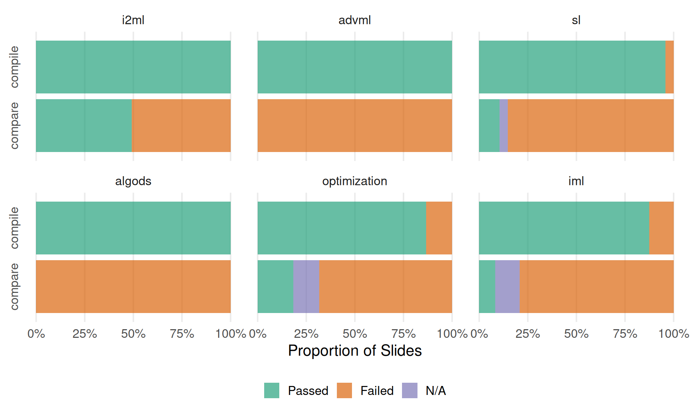

This document tabulates the state of the slides in
lecture*/slides/<topic>/ in terms of a) compilability
and b) comparison with presumably “known good” versions of the slides
located in lecture_*/slides-pdf/.
Displaying the latest commits of the lecture service repository and each of the currently included lectures (for debugging and race condition mitigation (kind of)).
| Branch | Last Commit | By | Message |
|---|---|---|---|
| main | 2025-01-12 17:12:29 | Lukas Burk | Update Makefile |
| Lecture | Branch | Last Commit | By | Message |
|---|---|---|---|---|
| lecture_optimization | main | 2025-01-10 22:16:09 | ludwigbothmann | multicrit iteration 2 |
| lecture_sl | main | 2025-01-10 09:06:25 | ludwigbothmann | Update README.md |
| lecture_i2ml | master | 2024-12-12 10:18:00 | ludwigbothmann | Merge overleaf-2024-12-12-1007 into master |
| lecture_algods | main | 2024-11-26 09:55:18 | 开心 |
header figure update (#6) Co-authored-by: Lukas Burk |
| lecture_iml | master | 2024-11-21 15:50:02 | Giuseppe Casalicchio | add new ex |
| lecture_advml | main | 2024-10-25 13:37:28 | Lukas Burk | Merge pull request #35 from slds-lmu/use-service-components |
If you’re missing a lecture here, you might have to add them to or ensure they are downloaded correctly.

lecture_advml/slides/gaussian-processes/slides-gp-bayes-lm.tex
\___________/ \________________/ \________________/
lecture topic <slide-name>
lecture_advml/slides-pdf/slides-gp-bayes-lm.pdf
\___________________/
pdf_static / "Reference PDF"Tables are organized by lecture (first level) and lecture topics
corresponding to folders in slides/<topic> (second
level), with a table per topic. Topics ignore certain folders like
attic and all.
<slide-name> with a
link to the compiled .tex file (if it compiles).latexmk -pdf. This can depend on the
availability of specific LaTeX dependencies, but assuming they are not
the issue, this usually indicates syntax issues or things like
\includegraphics calls using relative paths that work on
Overleaf but not locally.<slide-name>.tex against
slides-pdf/<slide-name>.pdf using
diff-pdf-visually:
diff-pdf (at a lower resolution
than the originals).10 topics with a total of 63 slides
| Slide | Compiles? | Comparison | Note |
|---|---|---|---|
| slides-forests-bagging-deepdive | ✅ | ✅ | |
| slides-forests-bagging | ✅ | ✅ | |
| slides-forests-basics | ✅ | ❓ | Dissimilar pages: 6, 7, 13 |
| slides-forests-featureimportance | ✅ | ❓ | Dissimilar pages: 3 |
| slides-forests-nutshell | ✅ | ✅ | |
| slides-forests-oob | ✅ | ❓ | Dissimilar pages: 2, 3, 4 |
| slides-forests-proximities | ✅ | ✅ |
| Slide | Compiles? | Comparison | Note |
|---|---|---|---|
| slides-knn | ✅ | ✅ |
| Slide | Compiles? | Comparison | Note |
|---|---|---|---|
| slides-nested-nestedintro | ✅ | ✅ | |
| slides-nested-nestedresampling | ✅ | ✅ | |
| slides-nested-trainvalidtest | ✅ | ✅ |
| Slide | Compiles? | Comparison | Note |
|---|---|---|---|
| slides-nn-nutshell | ✅ | ✅ |
| Slide | Compiles? | Comparison | Note |
|---|---|---|---|
| slides-classification-basicdefs | ✅ | ✅ | |
| slides-classification-discranalysis | ✅ | ❓ | Dissimilar pages: 8 |
| slides-classification-linear | ✅ | ❓ | Dissimilar pages: 2, 3 |
| slides-classification-logistic | ✅ | ✅ | |
| slides-classification-naivebayes | ✅ | ✅ | |
| slides-classification-nutshell | ✅ | ✅ | |
| slides-classification-tasks | ✅ | ❓ | Dissimilar pages: 6, 7 |
| Slide | Compiles? | Comparison | Note |
|---|---|---|---|
| slides-tuning-advanced | ✅ | ❌ | Differing page count: 15 vs 14 |
| slides-tuning-basicalgos | ✅ | ❓ | Dissimilar pages: 7 |
| slides-tuning-intro | ✅ | ❓ | Dissimilar pages: 3, 7 |
| slides-tuning-nutshell | ✅ | ✅ | |
| slides-tuning-pipelines | ✅ | ✅ | |
| slides-tuning-practical | ✅ | ❌ | Differing page count: 8 vs 6 |
| slides-tuning-tuningproblem | ✅ | ✅ |
6 topics with a total of 33 slides
| Slide | Compiles? | Comparison | Note |
|---|---|---|---|
| slides-calibration | ✅ | ❌ | Differing page count: 8 vs 9 |
| slides-fairness | ✅ | ❌ | Differing page count: 37 vs 38 |
| Slide | Compiles? | Comparison | Note |
|---|---|---|---|
| slides-gp-basic-1 | ✅ | No reference PDF | |
| slides-gp-basic-2 | ✅ | No reference PDF | |
| slides-gp-basic-3 | ✅ | No reference PDF | |
| slides-gp-bayes-lm-deep-dive | ✅ | No reference PDF | |
| slides-gp-bayes-lm | ✅ | ❓ | Dissimilar pages: 4, 10, 11, 13, 15 |
| slides-gp-covariance | ✅ | ❓ | Dissimilar pages: 2, 12 |
| slides-gp-mean | ✅ | ❓ | Dissimilar pages: 2, 7 |
| slides-gp-prediction | ✅ | ❓ | Dissimilar pages: 4, 5, 6, 14, 29 |
| slides-gp-training | ✅ | ❓ | Dissimilar pages: 3, 4, 7, 8, 9 |
| Slide | Compiles? | Comparison | Note |
|---|---|---|---|
| slides-multitarget-intro | ✅ | ❌ | Differing page count: 11 vs 12 |
| slides-multitarget-losses | ✅ | ❌ | Differing page count: 4 vs 5 |
| slides-multitarget-methods-1 | ✅ | ❌ | Differing page count: 8 vs 9 |
| slides-multitarget-methods-2 | ✅ | ❌ | Differing page count: 7 vs 8 |
| Slide | Compiles? | Comparison | Note |
|---|---|---|---|
| slides | ✅ | No reference PDF |
12 topics with a total of 95 slides
| Slide | Compiles? | Comparison | Note |
|---|---|---|---|
| slides-boosting-cwb-advanced | ✅ | ❓ | Dissimilar pages: 1, 22 |
| slides-boosting-cwb-basics | ✅ | ❓ | Dissimilar pages: 1 |
| slides-boosting-cwb-basics2 | ✅ | ❓ | Dissimilar pages: 1, 5, 6 |
| slides-boosting-cwb-glm | ✅ | ❓ | Dissimilar pages: 1 |
| slides-boosting-gbm-classification | ❌ |
706: Package biblatex Info: … file ‘authoryear.dbx’ not found. 706: Package biblatex Info: Trying to load biblatex custom data model… 706: Package biblatex Info: … file ‘biblatex-dm.cfg’ not found. 708: Package biblatex Info: … file ‘biblatex-dm.cfg’ not found. 708: \c@afterword=\count406 708: \c@savedafterword=\count407 1228: Package biblatex Info: … file ‘slides-boosting-gbm-classification.bbl’ not found. 1228: No file slides-boosting-gbm-classification.bbl. 1228: Package biblatex Info: Reference section=0 on input line 10. 1253: LaTeX Warning: File ‘figure/boosting_classif_title.png’ not found on input line 22. 1253: ! Package pdftex.def Error: File ‘figure/boosting_classif_title.png’ not found: using draft setting. 1253: See the pdftex.def package documentation for explanation. 1254: ! Package pdftex.def Error: File ‘figure/boosting_classif_title.png’ not found: using draft setting. 1254: See the pdftex.def package documentation for explanation. 1254: Type H |
|
| slides-boosting-gbm-regularization | ✅ | ❓ | Dissimilar pages: 1 |
| slides-boosting-gbm-with-trees-1 | ✅ | ❓ | Dissimilar pages: 1, 5, 11, 12, 13 |
| slides-boosting-gbm-with-trees-2 | ❌ |
706: Package biblatex Info: … file ‘authoryear.dbx’ not found. 706: Package biblatex Info: Trying to load biblatex custom data model… 706: Package biblatex Info: … file ‘biblatex-dm.cfg’ not found. 708: Package biblatex Info: … file ‘biblatex-dm.cfg’ not found. 708: \c@afterword=\count406 708: \c@savedafterword=\count407 1228: Package biblatex Info: … file ‘slides-boosting-gbm-with-trees-2.bbl’ not found. 1228: No file slides-boosting-gbm-with-trees-2.bbl. 1228: Package biblatex Info: Reference section=0 on input line 10. 1253: LaTeX Warning: File ‘figure/gbm_leaf_adjustment.pdf’ not found on input line 21. 1253: ! Package pdftex.def Error: File ‘figure/gbm_leaf_adjustment.pdf’ not found: using draft setting. 1253: See the pdftex.def package documentation for explanation. 1254: ! Package pdftex.def Error: File ‘figure/gbm_leaf_adjustment.pdf’ not found: using draft setting. 1254: See the pdftex.def package documentation for explanation. 1254: Type H |
|
| slides-boosting-gradient-boosting-concept | ✅ | ❓ | Dissimilar pages: 1, 4, 11, 15, 16 |
| slides-boosting-intro-adaboost | ✅ | ❓ | Dissimilar pages: 1, 4, 12 |
| slides-boosting-lgm-ctbm | ✅ | ❓ | Dissimilar pages: 1, 3 |
| slides-boosting-regression-illustrations | ✅ | ❓ | Dissimilar pages: 1 |
| slides-boosting-xgboost-deepdive | ✅ | ❓ | Dissimilar pages: 1 |
| slides-boosting-xgboost | ✅ | ❓ | Dissimilar pages: 1, 5, 9 |
| Slide | Compiles? | Comparison | Note |
|---|---|---|---|
| slides-cod-examples | ✅ | ❓ | Dissimilar pages: 3, 6, 10, 11, 12 |
| slides-cod | ✅ | ❓ | Dissimilar pages: 16 |
| Slide | Compiles? | Comparison | Note |
|---|---|---|---|
| slides-fs-filters1 | ✅ | ❓ | Dissimilar pages: 1, 2, 9 |
| slides-fs-filters2 | ✅ | ❓ | Dissimilar pages: 1, 2, 3, 5 |
| slides-fs-introduction | ✅ | ❓ | Dissimilar pages: 1 |
| slides-fs-motivating-examples | ✅ | ❓ | Dissimilar pages: 1 |
| slides-fs-wrapper | ✅ | ❓ | Dissimilar pages: 1, 3, 11 |
| Slide | Compiles? | Comparison | Note |
|---|---|---|---|
| slides-linsvm-erm | ✅ | ❌ | Differing page count: 7 vs 6 |
| slides-linsvm-hard-margin-dual | ✅ | ❓ | Dissimilar pages: 1, 6 |
| slides-linsvm-hard-margin | ✅ | ❓ | Dissimilar pages: 1 |
| slides-linsvm-optimization | ✅ | ❓ | Dissimilar pages: 1, 7 |
| slides-linsvm-soft-margin | ✅ | ❌ | Differing page count: 10 vs 9 |
| Slide | Compiles? | Comparison | Note |
|---|---|---|---|
| riskmin_optconst | ✅ | No reference PDF |
| Slide | Compiles? | Comparison | Note |
|---|---|---|---|
| slides-probability-theory | ✅ | ❓ | Dissimilar pages: 1, 14, 17, 21, 23 |
| Slide | Compiles? | Comparison | Note |
|---|---|---|---|
| slides-mc-binary-reduction | ✅ | ✅ | |
| slides-mc-codebooks | ✅ | ✅ | |
| slides-mc-losses | ✅ | ❓ | Dissimilar pages: 1, 3, 7 |
| slides-mc-softmax-regression | ✅ | ❓ | Dissimilar pages: 3, 10 |
| Slide | Compiles? | Comparison | Note |
|---|---|---|---|
| slides-nonlinsvm-featuregen | ✅ | ❌ | Differing page count: 9 vs 8 |
| slides-nonlinsvm-kernel-poly | ✅ | ❓ | Dissimilar pages: 1, 2, 3 |
| slides-nonlinsvm-kernel-rbf | ✅ | ❓ | Dissimilar pages: 1, 3, 12 |
| slides-nonlinsvm-kernel-trick | ✅ | ❓ | Dissimilar pages: 1, 2, 9, 12, 13 |
| slides-nonlinsvm-modelsel | ❌ |
1017: LaTeX Warning: File ‘figure/rbf_sigma.png’ not found on input line 20. 1017: ! Package pdftex.def Error: File ‘figure/rbf_sigma.png’ not found: using draft setting. 1017: See the pdftex.def package documentation for explanation. 1018: ! Package pdftex.def Error: File ‘figure/rbf_sigma.png’ not found: using draft setting. 1018: See the pdftex.def package documentation for explanation. 1018: Type H |
|
| slides-nonlinsvm-rkhs-repr | ✅ | ❓ | Dissimilar pages: 1, 3, 5, 6, 9 |
| slides-nonlinsvm-uniapprox | ✅ | ❌ | Differing page count: 10 vs 8 |
8 topics with a total of 33 slides
| Slide | Compiles? | Comparison | Note |
|---|---|---|---|
| slides-intro-algods | ✅ | No reference PDF |
| Slide | Compiles? | Comparison | Note |
|---|---|---|---|
| slides-encod-1-character-encoding | ✅ | No reference PDF | |
| slides-encod-2-number-encoding | ✅ | No reference PDF | |
| slides-encod-3-machine-numbers-Z | ✅ | No reference PDF | |
| slides-encod-4-machine-numbers-R | ✅ | No reference PDF | |
| slides-encod-5-R-machine-arithmetic | ✅ | No reference PDF |
| Slide | Compiles? | Comparison | Note |
|---|---|---|---|
| slides-numeric-1-matrix-norm | ✅ | No reference PDF | |
| slides-numeric-2-error-and-condition | ✅ | No reference PDF | |
| slides-numeric-3-stability | ✅ | No reference PDF | |
| slides-numeric-4-condition-in-les | ✅ | No reference PDF |
| Slide | Compiles? | Comparison | Note |
|---|---|---|---|
| slides-bigo-1-algorithms-turing | ✅ | No reference PDF | |
| slides-bigo-2-introduction-bigo | ✅ | No reference PDF | |
| slides-bigo-3-properties-and-examples-bigo | ✅ | No reference PDF | |
| slides-bigo-4-misconceptions-bigo-further-landau-symbols | ✅ | No reference PDF |
| Slide | Compiles? | Comparison | Note |
|---|---|---|---|
| slides-quadrature-1-introduction | ✅ | No reference PDF | |
| slides-quadrature-2-newton-cotes | ✅ | No reference PDF | |
| slides-quadrature-3-laplace | ✅ | No reference PDF | |
| slides-quadrature-4-monte-carlo | ✅ | No reference PDF |
| Slide | Compiles? | Comparison | Note |
|---|---|---|---|
| slides-random-numbers-1-introduction | ✅ | No reference PDF | |
| slides-random-numbers-2-congruential-generators | ✅ | No reference PDF | |
| slides-random-numbers-3-mersenne-twister-and-r | ✅ | No reference PDF | |
| slides-random-numbers-4-methods-other-distributions | ✅ | No reference PDF | |
| slides-random-numbers-5-rejection-sampling-and-ars | ✅ | No reference PDF |
| Slide | Compiles? | Comparison | Note |
|---|---|---|---|
| slides-matrix-decom-1-introduction-matrix-decomposition | ✅ | No reference PDF | |
| slides-matrix-decom-2-gaussian-elimination | ✅ | No reference PDF | |
| slides-matrix-decom-3-cholesky-decomposition | ✅ | No reference PDF | |
| slides-matrix-decom-4-qr-decomposition | ✅ | No reference PDF | |
| slides-matrix-decom-5-overdetermined-systems-regression-example | ✅ | No reference PDF |
| Slide | Compiles? | Comparison | Note |
|---|---|---|---|
| slides-matrix-approx-1-low-rank-approximation | ✅ | No reference PDF | |
| slides-matrix-approx-2-svd-pca | ✅ | No reference PDF | |
| slides-matrix-approx-3-recommender-systems-with-svd | ✅ | No reference PDF | |
| slides-matrix-approx-4-nmf-and-recommender-systems-with-nmf | ✅ | No reference PDF | |
| slides-matrix-approx-5-topic-extraction | ✅ | No reference PDF |
10 topics with a total of 60 slides
| Slide | Compiles? | Comparison | Note |
|---|---|---|---|
| slides-problems-1-unconstrained | ✅ | No reference PDF | |
| slides-problems-2-constrained | ✅ | No reference PDF | |
| slides-problems-3-other | ✅ | No reference PDF |
| Slide | Compiles? | Comparison | Note |
|---|---|---|---|
| slides-univariate-1-golden-ratio | ✅ | ✅ | |
| slides-univariate-2-brent | ✅ | ✅ |
| Slide | Compiles? | Comparison | Note |
|---|---|---|---|
| slides-multivar-first-order-1-GD | ✅ | ✅ | |
| slides-multivar-first-order-10-sgd-details | ✅ | ✅ | |
| slides-multivar-first-order-11-adam | ✅ | ❓ | Dissimilar pages: 4, 6, 8 |
| slides-multivar-first-order-12-comparison | ❌ |
1112: LaTeX Warning: File ‘slides/04-multivariate-first-order/figure_man/simu_linmod/GD_reg_med_lr_iters.pdf’ not found on input line 46. 1112: ! Package pdftex.def Error: File ‘slides/04-multivariate-first-order/figure_man/simu_linmod/GD_reg_med_lr_iters.pdf’ not found: using draft setting. 1112: See the pdftex.def package documentation for explanation. 1113: ! Package pdftex.def Error: File ‘slides/04-multivariate-first-order/figure_man/simu_linmod/GD_reg_med_lr_iters.pdf’ not found: using draft setting. 1113: See the pdftex.def package documentation for explanation. 1113: Type H |
|
| slides-multivar-first-order-2-stepsize | ✅ | ✅ | |
| slides-multivar-first-order-3-gd-deepdive-optimality | ✅ | ✅ | |
| slides-multivar-first-order-4-weaknesses-curvature | ✅ | ❓ | Dissimilar pages: 2 |
| slides-multivar-first-order-5-weaknesses-saddle | ✅ | ✅ | |
| slides-multivar-first-order-6-momentum | ✅ | ❓ | Dissimilar pages: 10, 19 |
| slides-multivar-first-order-7-gd-quadratic-forms | ✅ | ❌ | Differing page count: 10 vs 7 |
| slides-multivar-first-order-8-quadratic-forms-momentum | ❌ |
1120: ! Missing $ inserted. 1120: |
|
| slides-multivar-first-order-9-sgd | ✅ | ✅ |
| Slide | Compiles? | Comparison | Note |
|---|---|---|---|
| slides-multivar-second-order-1-newton-raphson | ✅ | No reference PDF | |
| slides-multivar-second-order-2-quasi-newton | ✅ | No reference PDF | |
| slides-multivar-second-order-3-gauss-newton | ✅ | No reference PDF | |
| slides-multivar-second-order-4-optimization-in-r | ✅ | No reference PDF | |
| slides-multivar-second-order-5-comparison | ❌ |
1102: LaTeX Warning: File ‘slides/04-multivariate-first-order/figure_man/simu_linmod/GD_log_med_lr_iters.pdf’ not found on input line 92. 1102: ! Package pdftex.def Error: File ‘slides/04-multivariate-first-order/figure_man/simu_linmod/GD_log_med_lr_iters.pdf’ not found: using draft setting. 1102: See the pdftex.def package documentation for explanation. 1103: ! Package pdftex.def Error: File ‘slides/04-multivariate-first-order/figure_man/simu_linmod/GD_log_med_lr_iters.pdf’ not found: using draft setting. 1103: See the pdftex.def package documentation for explanation. 1103: Type H |
|
| slides-multivar-second-order-6-fisher | ✅ | No reference PDF |
| Slide | Compiles? | Comparison | Note |
|---|---|---|---|
| slides-constrained-1-intro | ✅ | No reference PDF | |
| slides-constrained-2-lp | ✅ | No reference PDF | |
| slides-constrained-3-lp-solvers | ✅ | No reference PDF | |
| slides-constrained-4-lp-duality | ✅ | No reference PDF | |
| slides-constrained-5-nonlinear-lagrangian | ✅ | No reference PDF | |
| slides-constrained-6-fenchel-duality | ✅ | No reference PDF | |
| slides-optim-rest-6-regularity-conditions | ✅ | No reference PDF | |
| slides-optim-rest-7-constrained-solvers | ✅ | No reference PDF |
| Slide | Compiles? | Comparison | Note |
|---|---|---|---|
| slides-optim-derivative-free-1-coordinate-descent | ✅ | No reference PDF | |
| slides-optim-derivative-free-2-nelder-mead | ✅ | No reference PDF | |
| slides-optim-derivative-free-3-simulated-annealing | ✅ | No reference PDF | |
| slides-optim-derivative-free-4-multistart-optimization | ✅ | No reference PDF |
| Slide | Compiles? | Comparison | Note |
|---|---|---|---|
| slides-optim-evolutionary-algorithms-1-ea-intro | ✅ | No reference PDF | |
| slides-optim-evolutionary-algorithms-2-ea-numeric | ✅ | No reference PDF | |
| slides-optim-evolutionary-algorithms-3-ea-bit | ✅ | No reference PDF | |
| slides-optim-evolutionary-algorithms-5-cmaes | ✅ | No reference PDF | |
| slides-optim-evolutionary-algorithms-6-cmaes-wrapup | ✅ | No reference PDF |
| Slide | Compiles? | Comparison | Note |
|---|---|---|---|
| slides-bayesian-optimization-1-black-box | ✅ | No reference PDF | |
| slides-bayesian-optimization-2-loop | ✅ | No reference PDF | |
| slides-bayesian-optimization-3-bayesian-loop_1 | ✅ | No reference PDF | |
| slides-bayesian-optimization-3-bayesian-loop_2 | ✅ | No reference PDF | |
| slides-bayesian-optimization-4-surrogate-models | ✅ | No reference PDF | |
| slides-bayesian-optimization-5-noisy | ✅ | No reference PDF | |
| slides-bayesian-optimization-6-multicrit | ✅ | No reference PDF | |
| slides-bayesian-optimization-7-practical | ✅ | No reference PDF |
| Slide | Compiles? | Comparison | Note |
|---|---|---|---|
| macros | ❌ |
8: ! LaTeX Error: Command \comment undefined. 8: See the LaTeX manual or
LaTeX Companion for explanation. 8: Type H |
|
| slides-multicrit-1-intro | ❌ |
553: ! LaTeX Error: File ‘algorithm2e.sty’ not found. 553: Type X to
quit or |
|
| slides-multicrit-2-evolutionary | ❌ |
553: ! LaTeX Error: File ‘algorithm2e.sty’ not found. 553: Type X to
quit or |
|
| slides-multicrit-3-bo | ❌ |
553: ! LaTeX Error: File ‘algorithm2e.sty’ not found. 553: Type X to
quit or |
|
| slides-multicrit-4-practical | ❌ |
553: ! LaTeX Error: File ‘algorithm2e.sty’ not found. 553: Type X to
quit or |
9 topics with a total of 48 slides
| Slide | Compiles? | Comparison | Note |
|---|---|---|---|
| slides01-intro-motivation | ✅ | ❓ | Dissimilar pages: 3 |
| slides02-intro-goals | ✅ | ❓ | Dissimilar pages: 3, 4, 5, 6 |
| slides03-intro-dimensions | ✅ | ✅ | |
| slides04-intro-correlation | ✅ | ✅ | |
| slides05-intro-interaction | ✅ | ✅ |
| Slide | Compiles? | Comparison | Note |
|---|---|---|---|
| slides01-im-motivation | ✅ | ❓ | Dissimilar pages: 6, 8, 9, 10, 13 |
| slides02-im-lm-simple | ❌ | 1338: ! Undefined control sequence. 1338: \beamer@doifinframe …psilon = \xv ^\top \thetab 1338: + \epsilon $$ \par Interpr… | |
| slides03-im-lm-extensions | ✅ | ❓ | Dissimilar pages: 7, 8, 10, 11, 12 |
| slides04-im-glm | ✅ | ❌ | Differing page count: 9 vs 12 |
| slides05-im-gam-boosting | ❌ |
1338: ! Undefined control sequence. 1338: |
|
| slides06-im-rule-based | ✅ | ❓ | Dissimilar pages: 9, 10, 11, 12, 13 |
| Slide | Compiles? | Comparison | Note |
|---|---|---|---|
| slides01-fe-intro | ✅ | ✅ | |
| slides02-fe-ice | ✅ | ❌ | Differing page count: 12 vs 11 |
| slides03-fe-pdp | ✅ | ❌ | Differing page count: 9 vs 15 |
| slides04-fe-pdp-comments | ✅ | No reference PDF | |
| slides05-fe-ale-intro | ✅ | No reference PDF | |
| slides06-fe-ale | ✅ | No reference PDF | |
| TODO-slides-fe-decomposition | ✅ | No reference PDF | |
| TODO-slides-fe-h-statistic | ✅ | No reference PDF | |
| TODO-slides-fe-marginal-effects-2 | ❌ |
1333: LaTeX Warning: File ‘ame_limitation_example.png’ not found on input line 228. 1333: ! Package pdftex.def Error: File ‘ame_limitation_example.png’ not found: using draft setting. 1333: See the pdftex.def package documentation for explanation. 1334: ! Package pdftex.def Error: File ‘ame_limitation_example.png’ not found: using draft setting. 1334: See the pdftex.def package documentation for explanation. 1334: Type H |
|
| TODO-slides-fe-marginal-effects | ❌ |
1203: ! LaTeX Error: File ‘figure_man/me_movement’ not found. 1203:
See the LaTeX manual or LaTeX Companion for explanation. 1203: Type H
|
| Slide | Compiles? | Comparison | Note |
|---|---|---|---|
| slides01-shapley-game-theory | ✅ | ❓ | Dissimilar pages: 12, 20, 25, 26, 27 |
| slides02-shapley-ml | ✅ | ❓ | Dissimilar pages: 21, 22, 23, 27, 28 |
| slides03-shap | ✅ | ❌ | Differing page count: 16 vs 36 |
| slides04-kernel-shap | ✅ | No reference PDF | |
| slides05-shap-global | ✅ | No reference PDF |
| Slide | Compiles? | Comparison | Note |
|---|---|---|---|
| slides01-fi-intro | ✅ | ❓ | Dissimilar pages: 5, 10, 13, 15, 16 |
| slides02-fi-pfi | ✅ | ❓ | Dissimilar pages: 9, 17, 18, 22, 34 |
| slides03-fi-cfi | ✅ | ❓ | Dissimilar pages: 5, 6, 7, 10, 14 |
| slides04-fi-sage | ✅ | No reference PDF | |
| slides05-fi-loco | ✅ | ❓ | Dissimilar pages: 4, 5, 6, 12, 13 |
| TODO-slides-fi-pdp | ✅ | No reference PDF |
| Slide | Compiles? | Comparison | Note |
|---|---|---|---|
| slides01-le-intro | ✅ | ❓ | Dissimilar pages: 7, 8, 9, 10, 15 |
| slides02-le-adversarial | ❌ | 1366: ! Undefined control sequence. 1366: \beamer@doifinframe …nge of $\\epsilon \\|\\thetab 1366: \\|_1$ in prediction \citeb… | |
| slides03-le-adversarial-counterfactuals | ✅ | No reference PDF | |
| slides04-le-lime | ❌ | 1321: ! Undefined control sequence. 1321: \beamer@doifinframe … \R |g(\xv ) = s(\thetab 1321: ^\top \xv )\right \}$ be t… | |
| slides05-le-lime-examples | ✅ | No reference PDF | |
| slides06-le-lime-pitfalls | ✅ | ❓ | Dissimilar pages: 12, 14, 19, 20, 22 |
| slides07-le-counterfactuals | ✅ | ❓ | Dissimilar pages: 2, 3, 13, 33, 41 |
| slides08-le-counterfactuals-methods | ✅ | ❓ | Dissimilar pages: 7, 8, 10, 13, 17 |
| slides09-le-trust | ✅ | ❓ | Dissimilar pages: 9, 14, 15, 16, 28 |
| Slide | Compiles? | Comparison | Note |
|---|---|---|---|
| slides06-intro-pitfalls | ✅ | ❌ | Differing page count: 15 vs 11 |
| Slide | Compiles? | Comparison | Note |
|---|---|---|---|
| t01_intro | ✅ | No reference PDF | |
| t02_visualize_NNs | ✅ | No reference PDF | |
| t03_simple_integrated | ✅ | No reference PDF |
| Slide | Compiles? | Comparison | Note |
|---|---|---|---|
| t01_motivation | ✅ | No reference PDF | |
| t02_Instance-wise_Feature_Selection | ✅ | No reference PDF | |
| t03_Learning_to_explain | ✅ | No reference PDF |